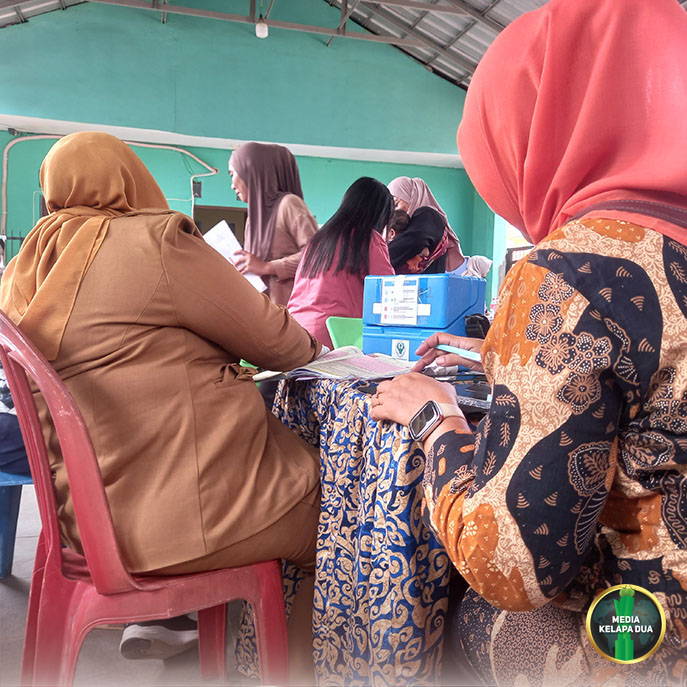

Berita Utama

Posyandu Siklus Hidup Melati RW 08 Tingkatkan Layanan Kesehatan Berbasis Teknologi
Tanggal, 13 Oktober 2026
MediaKada | Posyandu Siklus Hidup Melati RW 08, Kelurahan Kelapa Dua, Kecamatan Kebon Jeruk, Jakarta Barat, kembali melaksanakan kegiatan pelayanan kesehatan rutin bagi warga pada Selasa (13/10) pagi. Kegiatan ini merupakan salah satu upaya meningkatkan derajat kesehatan masyarakat melalui pelayanan kesehatan terpadu yang menjangkau seluruh kelompok usia.
Sebagai salah satu posyandu percontohan (pilot project) di Kecamatan Kebon Jeruk, Posyandu Siklus Hidup Melati RW 08 terus berinovasi dalam meningkatkan kualitas pelayanan. Salah satu langkah yang dilakukan adalah pemanfaatan teknologi melalui aplikasi layanan posyandu yang telah digunakan oleh Posyandu Remaja RW 08. Ke depan, seluruh kegiatan pelayanan Posyandu Siklus Hidup Melati RW 08 diharapkan dapat terintegrasi dengan aplikasi tersebut sehingga pelayanan menjadi lebih cepat, akurat, dan terdokumentasi dengan baik.
Kegiatan ini turut dihadiri Dr. Roikhatul Jannah, SST., Ft., MPH. dari Poltekkes Kemenkes Jakarta III, Novia Nuraini, SST, MKM dari Politeknik Kesehatan Kemenkes Jakarta III, Kepala Puskesmas Pembantu Kelapa Dua drg. Cindy Styaningsih beserta jajaran, perwakilan Puskesmas Kecamatan Kebon Jeruk, Sekretaris Kelurahan Kelapa Dua, Kasi Pemerintahan Kelurahan Kelapa Dua, Kasi Kesejahteraan Rakyat Kelurahan Kelapa Dua, Satpol PP Kelurahan Kelapa Dua, Ketua RW 08, LMK RW 08, FKDM, PKK Kelurahan Kelapa Dua, serta para kader Posyandu Siklus Hidup Melati RW 08.
Dalam kesempatan tersebut, Dr. Roikhatul Jannah, SST., Ft., MPH menyampaikan apresiasinya terhadap penyelenggaraan Posyandu Siklus Hidup Melati RW 08. Menurutnya, tingginya partisipasi warga yang datang untuk memeriksakan kesehatan, mulai dari balita hingga lansia, menunjukkan kesadaran masyarakat yang semakin baik terhadap pentingnya menjaga kesehatan.
Sedangkan Novia Nuraini, SST, MKM menyampaikan bahwa Antusiasme warga dalam mengikuti kegiatan posyandu ini sangat baik dan patut diapresiasi. Kehadiran masyarakat dari berbagai kelompok usia menjadi bukti bahwa pelayanan kesehatan berbasis komunitas masih sangat dibutuhkan dan efektif, ujarnya.
Peran serta pengurus wilayah, khususnya Ketua RT 003 RW 08, Muhamad Fitrahudin, S.Kom., yang juga bertugas di Poltekkes Kemenkes Jakarta III, memiliki kontribusi yang sangat penting dalam pengembangan Aplikasi Posyandu Siklus Hidup Melati RW 08. Dukungan yang diberikan tidak hanya dalam aspek pembiayaan, tetapi juga mencakup pemberian ide, konsep, serta rancangan aplikasi yang disesuaikan dengan kebutuhan pelayanan Posyandu di lingkungan RW 08.
Melalui keberadaan Posyandu Siklus Hidup Melati RW 08, diharapkan kualitas kesehatan masyarakat terus meningkat. Selain menjadi sarana pelayanan kesehatan, kegiatan ini juga memperkuat semangat gotong royong dan kepedulian bersama dalam menciptakan lingkungan yang sehat serta sejahtera bagi seluruh warga.